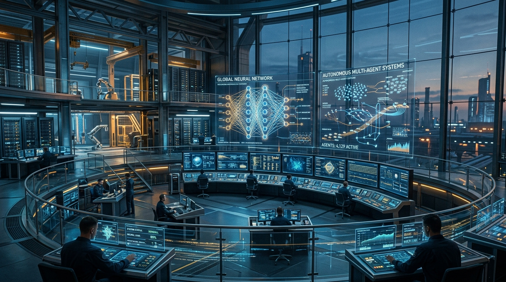
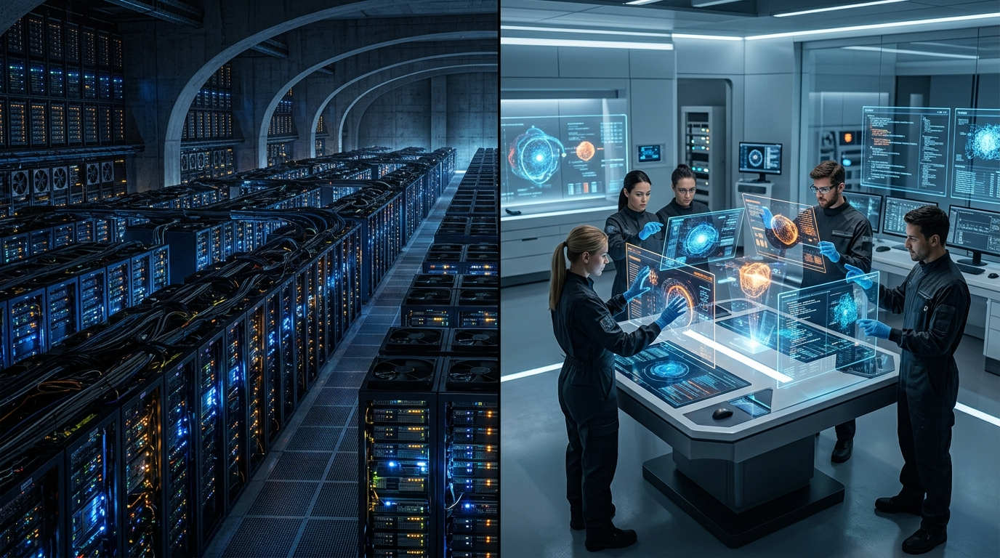
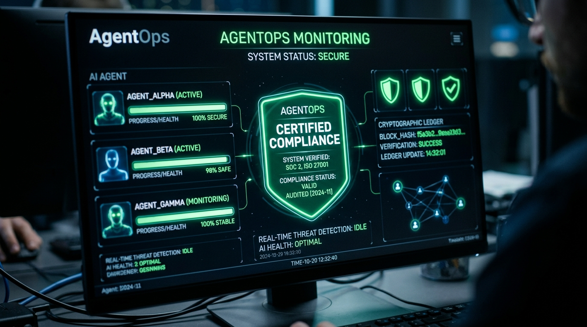

2026 AI Consulting
Strategic Blueprint
// Navigating the Autonomous Enterprise
High-Impact Strategic Insights
The AI consulting industry has definitively exited the "Innovation Theater" and pilot-wrapper era of 2023–2024. As the market expands toward $30B, AI delivery has matured into an industrialized, high-stakes engineering discipline focused on scaled, autonomous orchestration. For the C-Suite, three macro-shifts dictate immediate strategy:
The Death of Time-and-Materials (T&M) Billing
AI-driven delivery has created an "efficiency paradox." Firms billing hourly are cannibalizing their own revenues as AI speeds up execution. Survival requires pivoting to the BIO (Baseline, Instrument, Outcome) framework and shared-liability performance models.
The Shift to Autonomous Orchestration
Monolithic LLM prompt-response systems are obsolete. Enterprise value is now driven by Multi-Agent Systems (MAS) and the Model Context Protocol (MCP), where the consultant’s role shifts from prompt engineer to System Architect governing complex, non-linear workflows.
The "AI Trio" Procurement Power Shift
Decision-making has consolidated. The CFO, CDO, and CTO now demand hard P&L impact, strict regulatory compliance (EU AI Act, ISO 42001), and production-grade architectures over novelty.
FIG 1.0 — THE AI TRIO GOVERNANCE MODEL

FIG 2.0 — MARKET BIFURCATION (K-SHAPE)
Cross-Domain Strategic Alignments
By cross-referencing market dynamics, technological evolution, and buyer behavior, several interconnected realities emerge:
The Technology-Governance Nexus
The shift toward decentralized Multi-Agent Systems (MAS) directly correlates with the new procurement mandates for strict liability. Technologies like Zero-Trust Agent-to-Agent (A2A) protocols, Infinite Agency Prevention, and Immutable Agent Ledgers are no longer just technical best practices—they are the prerequisite features required to pass the enterprise's mandatory "Triple-Gate MLOps" governance audits.
Market Bifurcation and Engagement Models
The market has taken a "K-shape," polarizing into massive Infrastructure Integrators and hyper-specialized Agile Boutiques. This aligns perfectly with the new C-suite "Phased Hybrid" buying model: Agile boutiques are favored for Discovery and MVP delivery (leveraging PhD-led speed), while Infrastructure Integrators are tasked with Scaling and AgentOps (leveraging global workforces and outcome-based SLAs).
AgentOps as the New Recurring Revenue
With maintenance and compliance of autonomous systems ("AgentOps") costing 17-30% of initial development, consulting firms have a massive opportunity to replace lost T&M revenue with Agent Licensing and continuous monitoring SLAs.
Critical Tensions and Contradictions
Strategic planning must navigate several emerging paradoxes across the domains:
The Budget Reality vs. Technical Focus
While market and tech domains obsess over MAS, heterogeneous routing, and edge DeAI, enterprise budgeting reveals a stark contradiction: 70% of AI budgets are actually allocated to business process redesign and human upskilling (the 10-20-70 model). Consultancies over-indexing on technical architecture while ignoring change management will lose enterprise bids.
The CapEx Shift vs. OpEx Licensing
Enterprises are executing a "Great Realignment" toward CapEx (on-prem infrastructure) to secure an 18x cost advantage over cloud APIs. However, consultancies are simultaneously attempting to push OpEx "Agent Licensing" models. This creates a severe pricing tension between buyers wanting to own their cost-efficiencies and vendors trying to rent back the value.
Consolidation vs. The Brain Drain
Large infrastructure firms are aggressively acquiring mid-tier boutiques to capture "Agentic Orchestration" capabilities. However, these acquisitions face critical "integration debt" due to non-interoperable agent frameworks, compounded by elite PhD talent fleeing large-firm bureaucracy. Scale is actively working against technical agility.
FIG 3.0 — BUDGET ALLOCATION VS TECH FOCUS
Prioritized Next Steps
To dominate the 2026 landscape, the executive team must immediately initiate the following:
Transition to Deflection-Rate Pricing & The BIO Framework
Restructure commercial agreements immediately. Phase out T&M for production work. Implement the Baseline-Instrument-Outcome framework to capture 5-20% of quantified value (e.g., tasks automated, revenue generated, costs deflected).
Architect for "Compliance-by-Design"
Mandate that all engineering teams integrate Triple-Gate MLOps, DAG-based tracing, and Immutable Ledgers into core delivery templates. Certifications (SOC 2 Type 2, ISO 42001) must be leveraged as competitive moats in the procurement process.
Realign Delivery Resources to the 10-20-70 Model
Shift the firm's center of gravity. While maintaining elite System Architect talent for the 30% technical build, aggressively expand Organizational Design and Change Management practices to capture the 70% of enterprise budget dedicated to human upskilling and process redesign.
Productize "AgentOps" Maintenance Tiers
Launch distinct, subscription-based SLA tiers for post-deployment management. Offer "tamper-evident" audits, infinite agency prevention, and model drift remediation as a recurring service line to secure long-term revenue streams.

FIG 4.0 — AGENTOPS SLA DASHBOARD